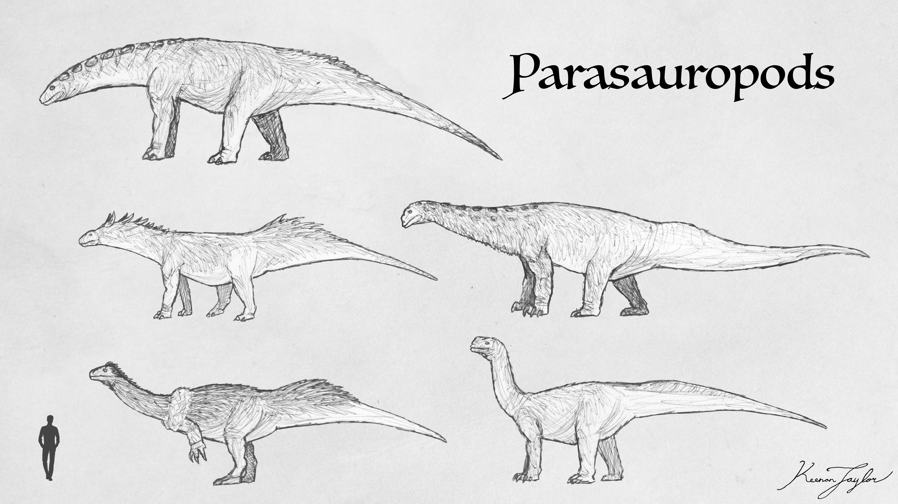
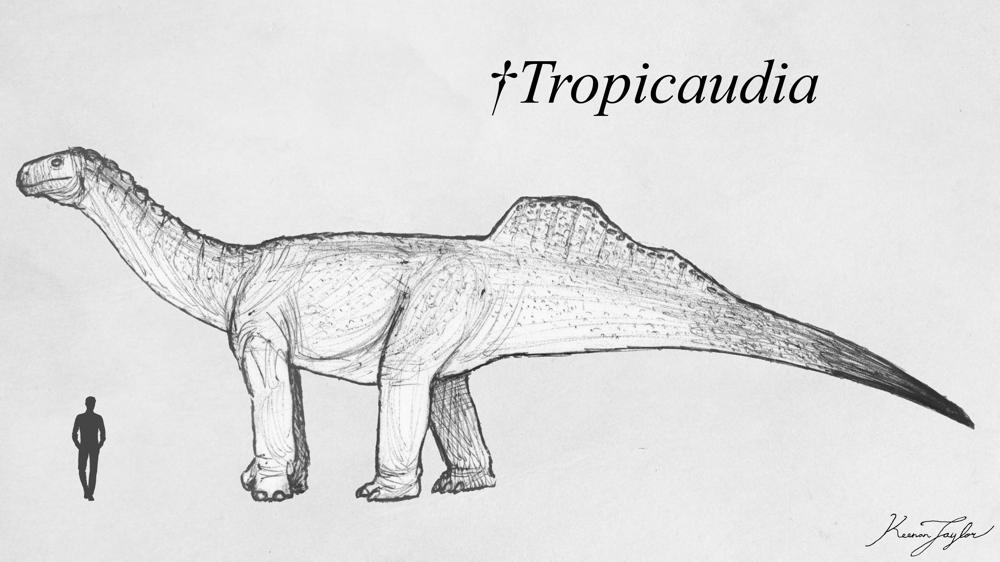
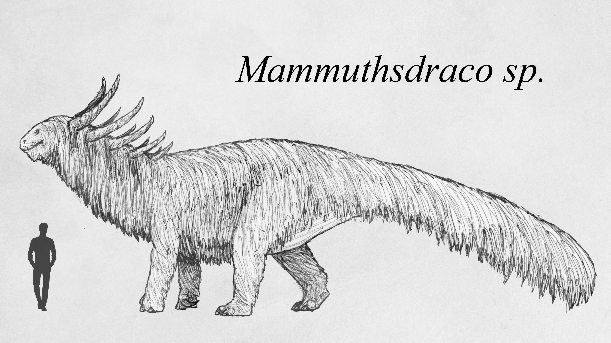
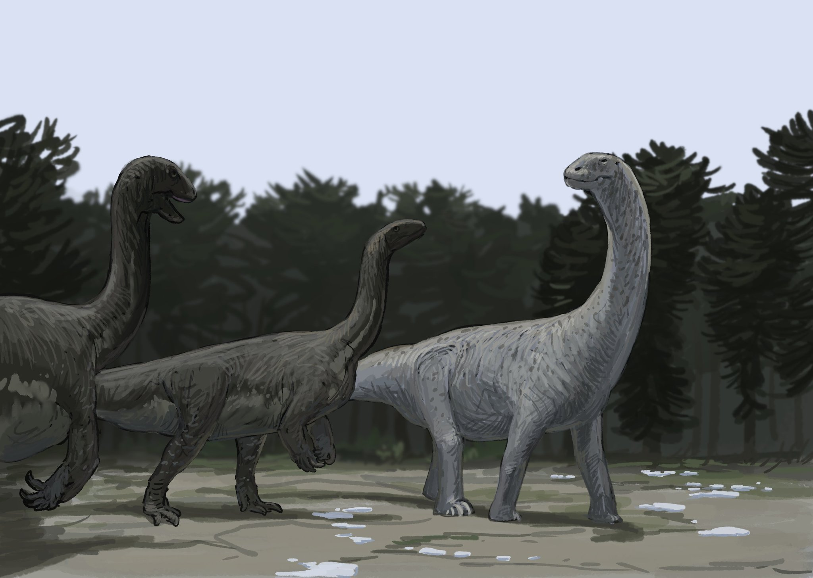
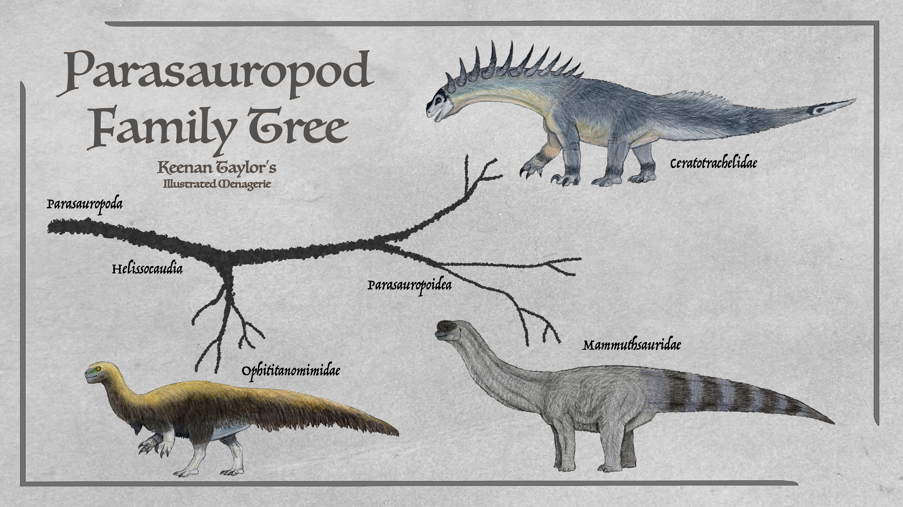
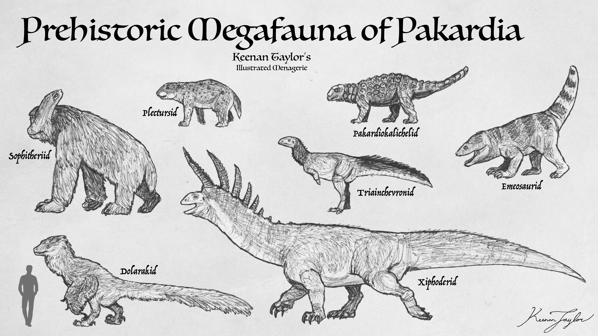
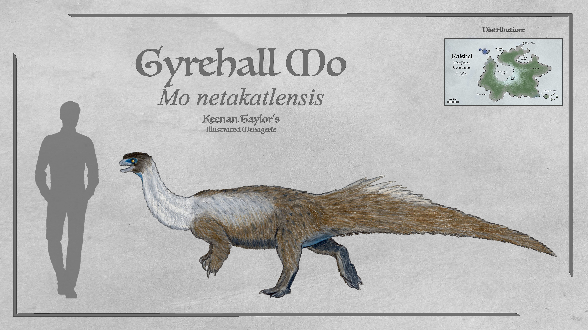
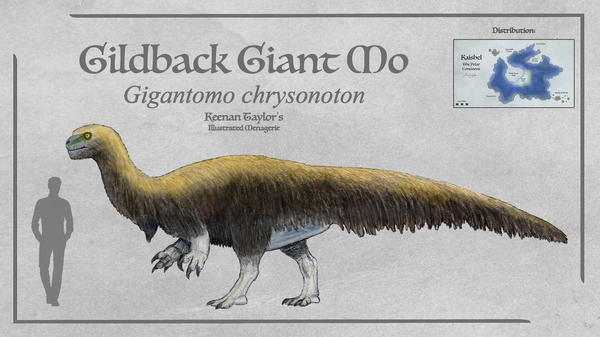
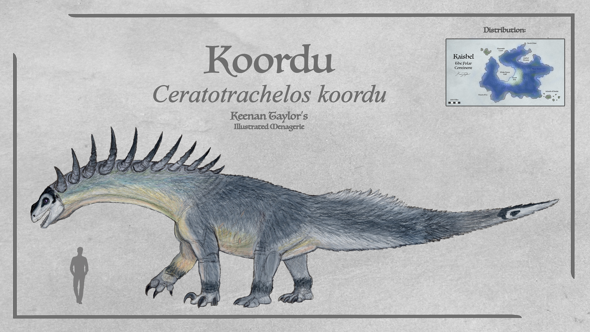
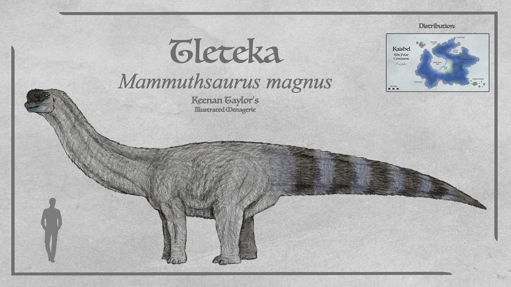

Scientific Classification
| Kingdom | Animalia | Animalia | Animalia |
|---|---|---|---|
| Phylum | Chordata | Animalia | Animalia |
| Clade | Archosauria | Animalia | Animalia |
| Clade | Avemetatarsalia | Animalia | Animalia |
| Clade | Dinosauria | Animalia | Animalia |
| Clade | Saurischia | Animalia | Animalia |
| Clade | Sauropodomorpha | Animalia | Animalia |
| Clade | Bagualosauria | Animalia | Animalia |
| Clade | Plateosauria | Animalia | Animalia |
| Clade | Massopoda | Animalia | Animalia |
| Clade | Parasauropoda | Animalia | Animalia |
Taxonomic note: The term prosauropod was historically used to describe the more basal relatives of sauropods. However, subsequent research has demonstrated that prosauropods do not constitute a single exclusive clade. Some traditional prosauropods are more closely related to true sauropods than they are to other animals historically classified under the same name. Consequently, the term is now used informally for sauropodomorphs outside the true Sauropoda.
01 · INTRODUCTION
Overview
The parasauropods are an endemic radiation of sauropodomorph dinosaurs that became particularly successful in the southern polar continent of Kaishel. Although closely related to the true sauropods, they represent a distinct evolutionary lineage with a different anatomical construction, reproductive strategy, and ecological specialization. They are among the most successful large dinosaurs in Kaishel, where they occupy a variety of herbivorous niches and include some of the continent's largest terrestrial animals.
The term "prosauropod" was historically applied to the more basal members of Sauropodomorpha, particularly those that retained a generally bipedal posture and lacked the extreme specializations of later sauropods. However, it is no longer regarded as the name of a distinct evolutionary group. Research has established that some animals traditionally called prosauropods are more closely related to true sauropods than they are to other members of the same informal category. In Kaimere, however, a particular radiation of these basal sauropodomorphs shares a common ancestry and forms a distinct clade. These animals are formally known as the parasauropods.
Parasauropods are generally more robustly constructed than true sauropods. They lack many of the anatomical specializations that allowed their relatives to attain extraordinary sizes, particularly the extensive skeletal pneumaticity and highly flexible vertebral articulations characteristic of the largest sauropods. Their vertebrae do not possess the same ball-and-socket joints that allow true sauropods to move their enormous necks through such a wide range of motion. Consequently, parasauropods have a more restricted feeding range and must rely more heavily on moving their bodies to access vegetation.
Their skeletons nevertheless possess some pneumatic features. Air sacs extend into portions of the neck and torso, and their bones are somewhat hollowed, reducing the weight of the skeleton. However, these adaptations are considerably less developed than in true sauropods. In some of the most lightly built sauropod clades, such as the keratoderms of the Known World, air sacs penetrate much of the skeleton. Certain neck vertebrae may be composed of as much as 70 percent internal air space. Parasauropods never approached this degree of skeletal specialization.
This difference places a practical limit on their maximum size. Whereas true sauropods evolved beyond the conventional constraints on terrestrial tetrapod mass, parasauropods generally remained within the range of other exceptionally large land animals. Most species weigh considerably less than a tonne, although the larger forms commonly reach several tonnes. The largest known parasauropods, the koordu and tleteka of Kaishel, attain masses comparable to the largest terrestrial mammals, with individuals reaching approximately 15 — 20 tons. The koordu is particularly exceptional, with adult males occasionally reaching 20 tons.
Despite their more conservative body construction, parasauropods possess several noteworthy anatomical adaptations. Their tails retain powerful caudifemoralis musculature, which provides much of the force for leg movement. Unlike their relatively inflexible necks, their tails possess ball-and-socket articulations that allow them to be swung with considerable range and precision. Although they lack specialized tail weapons such as osteoderms or bony clubs, a forceful strike can break human bones and may be lethal in the larger species.
The evolutionary success of parasauropods is especially evident in Kaishel. The continent's cold climate and extensive temperate and polar ecosystems have favored animals capable of tolerating low temperatures, raising their young under challenging conditions, and exploiting vegetation unavailable to many other large herbivores. Parasauropods possess feathers and comparatively sophisticated reproductive and parental behaviors, characteristics that helped them persist through climatic changes that severely affected other megafauna. Their success is also associated with their ability to exploit environments that proved unsuitable for true sauropods, particularly those subject to prolonged freezing conditions.
Today, parasauropods constitute one of the dominant groups of large herbivorous dinosaurs in Kaishel. They occur in coastal fern prairies, temperate forests, wetlands, and the immense Silent Forest. Their ecological influence is considerable, and they are among the major animals responsible for shaping the continent's vegetation and terrestrial ecosystems.
02 · DEEP TIME
Evolutionary History
Origins and Early Diversification

The ancestors of the parasauropods arrived in Kaishel during one of the brief periods of continental contact between eastern Kairul and the southern continent. At the time, Kaishel was still connected to the broader supercontinent associated with the earliest introductions of Earth life through the Portal. The formation and subsequent separation of the continental landmasses left Kaishel isolated for hundreds of millions of years, with relatively few terrestrial animals reaching it afterward.
The sauropodomorphs that crossed into Kaishel were among the earliest dinosaurs to establish themselves there. They were basal members of the group that would eventually give rise to both the parasauropods and the true sauropods. Their precise ancestry is uncertain, but they are thought to have descended from animals comparable to Massospondylus. Following their arrival, these early sauropodomorphs became established in the continent's developing ecosystems and began an evolutionary radiation largely independent of their relatives elsewhere.

The parasauropods were already a major dinosaur group during the Age of Crocodiles, which extended from approximately 190 to 152 million years ago. During this period, they became one of the earliest major success stories of dinosaurs in Kaimere. Their descendants diversified into several ecological forms, some retaining a relatively primitive, bipedal body plan while others gradually adopted quadrupedal locomotion.

Their early success was not confined to the warmer regions of the world. As climatic conditions deteriorated and extensive ice ages affected the northern and temperate regions during the later Mesozoic, parasauropods proved unusually resilient. Their feathers, reproductive biology, and relatively sophisticated parental care gave them advantages over many other large reptiles. They were among the few groups of megafauna not merely to survive these climatic changes, but to thrive through them.

One notable example was Mammuthsdraco, a possible parasauropod from Mesozoic Ni'Khar. A partially preserved specimen retains evidence of a substantial covering of shaggy feathers, providing an indication of the insulation developed by some lineages during the ice ages between approximately 152 and 145 million years ago. Such adaptations allowed parasauropods to occupy colder environments in which other large herbivorous dinosaurs were less successful.
Competition with True Sauropods

The fortunes of parasauropods in the mainland regions of Kaimere changed as the climate warmed and successive Harvests introduced new animals. Particularly important was the arrival of additional true sauropods during the late Jurassic, including animals introduced through the late Kimmeridgian North American Harvest.
True sauropods possessed several advantages over parasauropods when occupying warm, productive environments. Their highly pneumatic skeletons allowed them to attain enormous body sizes without a proportionate increase in skeletal mass. Their specialized vertebral articulations also gave them a much greater feeding range, allowing them to exploit large quantities of vegetation without moving their entire bodies as frequently. These characteristics made them especially successful in the warmer environments of the Known World.
As more sauropod lineages became established, parasauropods increasingly lost ground to their larger and more specialized relatives. Their more robust skeletons, less flexible necks, and comparatively limited maximum size placed them at a disadvantage in many of the environments where true sauropods flourished.
Their fortunes were not entirely determined by competition, however. A new opportunity emerged when a land bridge connected Kairul with Kaishel. The parasauropods were among the animals that crossed into the southern continent, where their existing adaptations proved exceptionally advantageous.
True sauropods have repeatedly failed to establish themselves in Kaishel, despite at least two opportunities to cross into the continent. Their physiology is poorly suited to the prolonged cold found throughout much of the region. Although adult individuals may be capable of enduring relatively low temperatures, their eggs and young are considerably more vulnerable. Their reproductive cycle and early development are particularly poorly suited to environments in which temperatures regularly fall below freezing.
Parasauropods faced no equivalent limitation. Their feathers provided insulation, and their reproductive strategies included extensive nest construction and parental care. Their ability to tolerate cold conditions allowed them to exploit habitats that remained largely inaccessible to true sauropods. The resulting ecological opportunity helped turn Kaishel into the principal refuge and center of diversification for the group.
The Kaishelan Radiation

Following their establishment in Kaishel, parasauropods underwent a substantial radiation. Numerous lineages appeared, diversified, and eventually disappeared over the ensuing millions of years. Three major clades are represented among the continent's surviving forms: the ophititanomimids, the parasauropoidea, and the ceratotrachelids.
The ophititanomimids are the most basal of these groups and are commonly referred to as the true prosauropods. Their body plan retains many of the characteristics associated with early sauropodomorphs. This has occasionally led to confusion among naturalists familiar with the ophititan thescelosaurs of the Known World. In the Assembly, these ornithopods are sometimes called prosauropod mimics, but to Kaimerans, who are far more familiar with the thescelosaurs, the relationship is generally understood in the opposite direction: the Kaishelan parasauropods are the animals that resemble the familiar thescelosaur body plan.
The second group, the Parasauropoidea, or true parasauropods, became quadrupedal during the Mesozoic Dynasties. Their feet have undergone considerable specialization, converging upon a configuration broadly comparable to that of true sauropods. Their wrists, however, remain unable to pronate, meaning that their palms continue to face one another rather than being rotated downward in the manner of many other quadrupedal animals.
The third group, the ceratotrachelids, adopted quadrupedal locomotion more recently in their evolutionary history. Unlike true parasauropods, they retain functional claws on their forelimbs. This combination of quadrupedal locomotion and retained manual claws is particularly important in the evolution of the koordu, the largest living parasauropod. The family Xiphoderidae, represented by several smaller parasauropods across the Khalin Islands, is believed to be closely related to the ceratotrachelids.
Although parasauropods remain present in several regions beyond Kaishel, including southern Kairul and the Crown of Kairul, their greatest diversity and ecological success are found on the polar continent itself.
Parasauropods Beyond Kaishel

Although Kaishel is the principal stronghold of the parasauropods, members of the group were historically more widespread. Smaller lineages survived in parts of the southern Known World and the surrounding island systems, where they occupied ecological niches that allowed them to persist alongside the more recently introduced fauna.
One such lineage is the Xiphoderidae, a family of parasauropods once distributed widely across the Khalin Islands. Their history is closely associated with the major faunal turnover approximately 1.5 million years ago, when climatic cooling and the arrival of mainland and harvested animals placed considerable pressure on the native megafauna.
The changes were particularly severe in Pakardia and the Qadanith Archipelago, where many endemic large animals became extinct. Some of the larger native fauna of Hyote within the Blackfish Islands also appear to have disappeared. Smaller xiphoderids, however, survived the turnover and subsequently became large and successful in Pakardia and Qadan.
Their survival was not universal. Some island populations were lost during the climatic changes at the end of the Anchored Period, and others may have been weakened by the initial decline in suitable habitat. Nevertheless, their persistence in regional mythology suggests that at least some populations survived into the period of human settlement. Their eventual disappearance from several islands was likely driven by hunting and other pressures associated with the arrival and expansion of Kaimeran populations.
Qadan is believed to have retained a small, isolated relic population until within the last several thousand years. By this point, the animals were probably inbred remnants of populations that had suffered a much earlier decline following the first settlement of the island. There are also reports suggesting that a xiphoderid may have persisted in Khalren, although its survival there remains uncertain.
The most enigmatic surviving or recently surviving member of this broader radiation is the animal known on Blackfish Island as the "Quiver In His Neck,"" or odache'kaa. It is described as a large, long-necked animal with fur-like feathers, claws, and a series of horns extending along its neck. Sketches and a few indistinct photographs suggest that it is a parasauropod, although its precise relationships remain uncertain.
Most researchers who have examined the available evidence consider it likely to be a xiphoderid. Its ancestors may have been relatively small animals that survived the Dynastic Extinction and subsequently increased in size as ecological opportunities became available. The Blackfish Islands are believed capable of supporting substantially larger animals than those represented by the available sightings, and the odache'kaa may be only an average-sized member of its population.
Very little is known about its behavior. Reports suggest that it lives in small herds and undertakes some form of seasonal migration, with most sightings occurring in lowland habitats during winter. Its apparent ability to hold its head high and briefly stand on its hind legs suggests that it may be a specialized high browser. Without living relatives available for detailed study, however, its anatomy, ecology, and evolutionary history remain largely speculative.
03 · SPECIES ACCOUNTS
Known Diversity
The following accounts document representative felids recorded in the encyclopedia. Select a species to consult its individual natural history and descriptive account.
Gyrehall Mo

Mo netakatlensis
Smallest and most abundant of the ophititanomimids are the mo. Mo is the Tlaton spoken word for most parasauropods, and the word on its own or with a simple pinch of the thumb and several fingers refers to this animal. There are numerous species of mo, with the type species being the one abundant on Kaishel's Gyrehall Island called the Gyrehall mo. As they are very similar to other small mainland species, it is thought they crossed to Gyrehall 1.5 million years ago when sea levels dropped and the continent got extremely cold. As the island is over 400 miles from the mainland, such a crossing would be impossible today.
Read species article →Gildback Giant Mo

Gigantomo chrysonoton
Gigantomo is a genus with several mainland species. They live quite like the Gyrehall mo, but are much larger. At up to a ton, these animals can fend off small coelophosaurs and dromaeosaurs in their environment, and the largest dromaeosaurs that approach their size can be reliably bested by a group, though of course these large dromies are reliable predators and do hunt them. Gildback giant mo are considered particularly dangerous due to their aggression and herd defense, and are a prized kill by Tlaton hunters.
Read species article →Koordu

Ceratotrachelos koordu
The largest parasauropod comes from a clade that more recently took to all fours and retains use of their hand claws: the ceratotrachelids. Male koordu can reach 20 tons, though average between 12 and 15, and cows generally between 8 and 10. A row of paired osteoderms are fused to struts of the transverse process of the neck vertebra. These are covered by keratin. In males these form long horns. In cows, these osteoderms instead form stout bosses which store calcium for their eggs. Koordu favor open coastal territories, and are often sighted from the sea. They feed mostly on low foliage, favoring the lush coastal horsetail and fern prairies, tending to leave grass for the likes of ornithopods and recently-arrived caribou. Koordu have two or three smaller related species which have a more restricted range to the west and east, but this animal ranges throughout the continent.
Read species article →Odache'kaa

Aukenbelos odacheka
The largest animal on the Blackfish islands according to Felicity is the Quiver In His Neck, or odache'kaa as the Blackfish called them: a long-necked beast with fur, claws, and horns down its neck. Sketches and a few blurry photographs seem to indicate a parasauropod of some sort, though its phylogeny is uncertain. Most suspect its ancestors were a small species that managed to survive the Dynastic Extinction and grew large with opportunity. Very little is known about the odache'kaa, and without living studied relatives it's difficult to make many assumptions. They appear to live in small herds and engage in some sort of migration, with most of their sightings being in the lowlands during winter. From pictures, they seem to hold their head high and can stand on their back legs at least for a short period of time, and are likely the high browsing specialist of this region.
Read species article →Tleteka

Mammuthsaurus magnus
The helmeted tleteka is the largest member of its clade, and a contender for largest Kaishelan parasauropod. Their males on average are comparable to male koordu, though koordu have the biggest specimens on record. What fossil surveys have been conducted suggest this group once approached 22 tons millions of years ago, this animal is closer to the size of Kaimere's largest proboscideans, with adults ranging from 9 to 15 tons, with males averaging slightly larger. They are still among the biggest animals in the Silent Forest. Certainly its largest permanent residents. They are versatile feeders, though are most famous for their feeding of mossy bark of fallen trees. Highly reclusive animals, they avoid the sort of open territories that Tlaton often prefer to live in, so are only rarely encountered. This has given them a rather mythical reputation among the indigenous peoples.
Read species article →04 · CLASSIFICATION
Taxonomic Notes
The Parasauropoda are a distinctive radiation of sauropodomorph dinosaurs endemic primarily to Kaishel, the southern polar continent of Kaimere. Although they share ancestry with the true sauropods, parasauropods represent a separate evolutionary radiation that retained numerous ancestral anatomical characteristics while developing adaptations that allowed them to thrive in colder environments. Their evolutionary history is closely associated with the climatic extremes of the southern continent, where their ability to tolerate cold gave them an advantage over their more derived relatives.
The term prosauropod was historically used to describe early sauropodomorphs that were not true sauropods. However, subsequent research has demonstrated that prosauropods do not constitute a single exclusive clade. Some traditionally recognized prosauropods are more closely related to true sauropods than they are to other animals historically assigned to the same group. Consequently, prosauropod is now generally used as an informal designation for sauropodomorphs outside the true Sauropoda.
Kaimere possesses a distinctive exception to this pattern. Although its parasauropods are traditionally described as prosauropods, they share common ancestry and form a recognizable clade separate from the sauropods that arrived during the early Jurassic. They are believed to descend from animals resembling Massospondylus, although their precise ancestry remains uncertain.
Three major clades of parasauropods are recognized on Kaishel and four as a whole are still extand today. The most basal are the Ophititanomimidae, commonly called true prosauropods. The second are the Parasauropoidea, or true parasauropods, which have been quadrupedal since the Mesozoic Dynasties. The third are the Ceratotrachelidae, a more recently quadrupedal lineage that retains functional claws on its hands and includes the largest known parasauropods. Closely related to them are the Xiphoderidae, which still have extant members scattered within the Khalin Archipelago in the Known World.
The parasauropods should not be confused with the cervasaurs, a separate group of basal ornithopods. Although some Tlaton classify cervasaurs alongside parasauropods under the broad name mo, their anatomy is distinct. Cervasaurs lack the air sacs characteristic of parasauropods and possess a fundamentally different respiratory system.